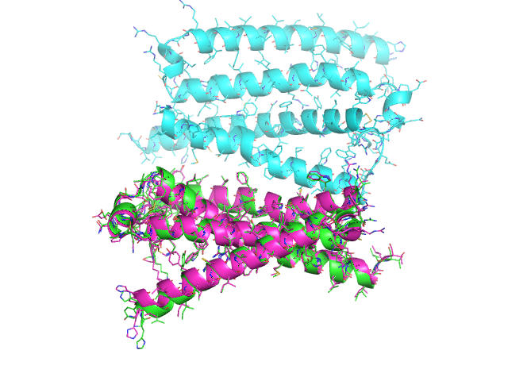
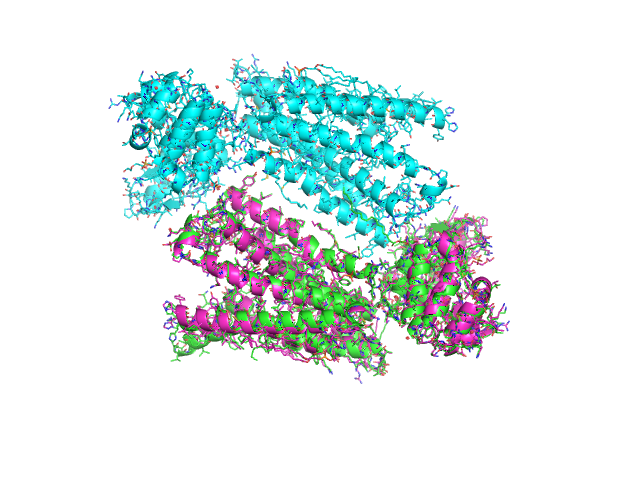
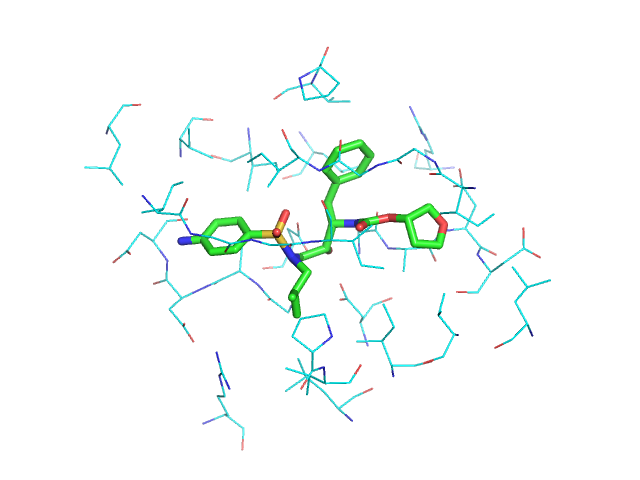
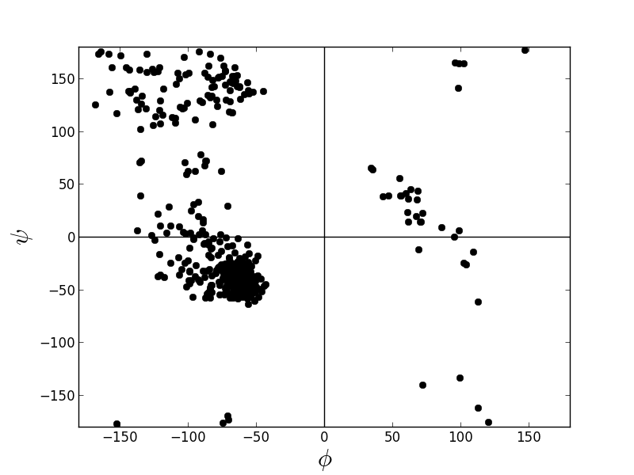
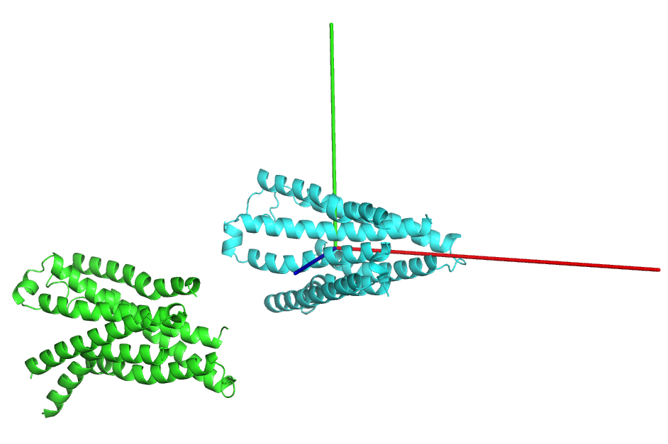
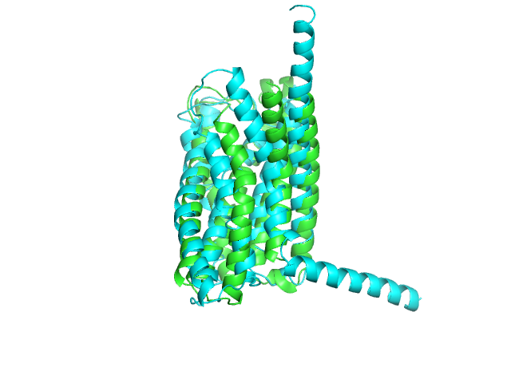

Here are some examples...
Download a pdb, select desired atoms, align the structures, and save the structures to pdb files.
from protutils.pdb import PDBFile # Download 4k5Y.pdb from the RCSB Protein Data Bank pdb = PDBFile.fetch('4K5Y') # Select residues less than 263 on chain A, then chain B chain_a = pdb.select(chain__eq='A', nres__lt=263) chain_b = pdb.select(chain__eq='B', nres__lt=263) # Align selection with another selection that contains the same number of atoms aligned_chain_b = chain_b.align(chain_a) # prints: RMSD = 0.983960869568 # write structures to pdb files chain_a.write_pdb('chain_a.pdb') chain_b.write_pdb('chain_b.pdb') aligned_chain_b.write_pdb('aligned_chain_b.pdb')
Now, we can visualize the structures in pymol.
load chain_a.pdb load chain_b.pdb load aligned_chain_b.pdb zoom show cartoon ray png example.png
This produces the following image

The align method works selections of equal size (e.g. different conformers of the same molecules). It will fail for molecules with different number of atoms. To align different molecules, use the cealign method.
from protutils.pdb import PDBFile pdb = PDBFile.fetch('4K5Y') chain_a = pdb.select(chain='A') # equivalent to pdb.select(chain__eq='A') chain_b = pdb.select(chain='B') # compare the number of atoms in the selection len(chain_a) == len(chain_b) # returns False # the align method would fail for these selections aligned_chain_b = chain_b.cealign(chain_a) # prints RMSD = 0.874903919378 (RMSD of alpha carbons) # write structures chain_a.write_pdb('chain_a.pdb') chain_b.write_pdb('chain_b.pdb') aligned_chain_b.write_pdb('aligned_chain_b.pdb')
Visualizing the saved structures gives

Selection helper functions allow quick selections of protein, ligand, backbone, and side chain atoms. Distance selections between two objects can be made. Most methods return a new object, allowing chaining methods together.
from protutils.pdb import PDBFile # write a small helper function def residues_for_selection(selected, pdbfile): """Get all residues atoms for a selection """ residues = {atm.nres for atm in selected} return pdbfile.select(nres__isin=residues) pdb = PDBFile.fetch('1HPV') # Select ligand ligand = pdb.ligand() # select protein atoms with 5 Angstroms of the ligand atoms = pdb.protein().within(5.0, ligand) prot = residues_for_selection(atoms, pdb) ligand.write_pdb('ligand.pdb') prot.write_pdb('prot.pdb')
Visualizing gives

Create a Ramachandran plot of a protein.
from protutils.pdb import PDBFile pdb = PDBFile.fetch('4K5Y') protein = pdb.protein() # remove HETATM records protein.ramachandran_plot()
It is sometimes useful to orient structures such that the centroid lies at the origin and the principle axes of the protein align with the x, y, and z axes.
from protutils.pdb import PDBFile pdb = PDBFile.fetch('4K5Y') protein = pdb.select(chain='A', nres__lt=1000).protein() orient = protein.orient() protein.write_pdb('4K5YA.pdb') orient.write_pdb('4K5YA_0.pdb')
Visulaize the transformed structure in pymol (Cartesian axes indicated by rgb lines).

Find similar proteins using PDB BLAST.
from protutils.pdb import PDBFile from protutils.ncbi.blastp import BLASTPDBRecord pdb = PDBFile.fetch('4K5Y') chain_a = pdb.select(chain='A', nres__lt=1000) # Get sequence sequence = chain_a.sequence.replace('-', '') # search for similar sequences to 4K5Y_A query = BLASTPDBRecord(sequence) # Get top hit PDB = query.get_best()['pdb'] similar = PDBFile.fetch(PDB) similar.select(chain='A', nres__lt=1000) # Compare aligned structures aligned = similar.cealign(chain_a) chain_a.write_pdb('4k5y_A.mod.pdb') aligned.write_pdb('{0}_A.mod.pdb'.format(PDB))
Now, compare the structures:
